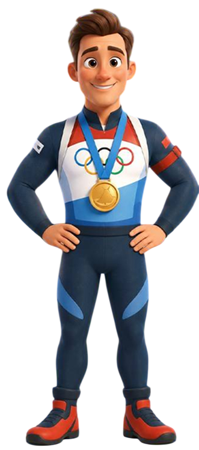
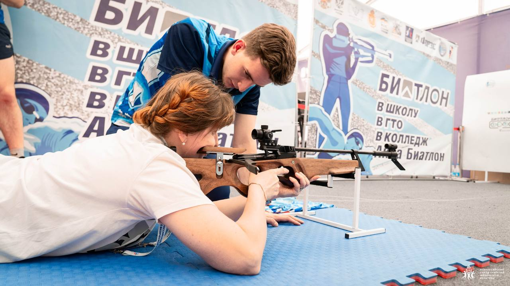
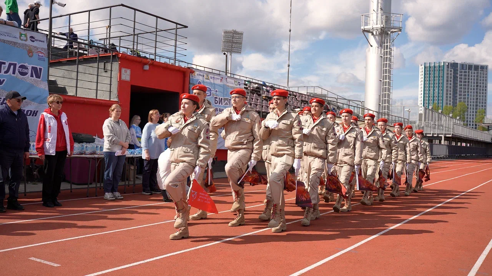
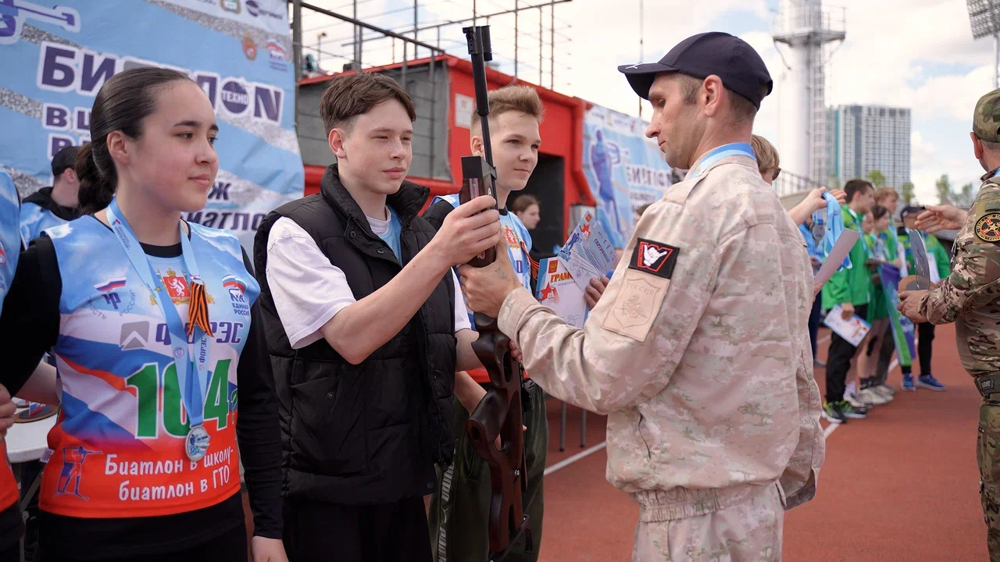
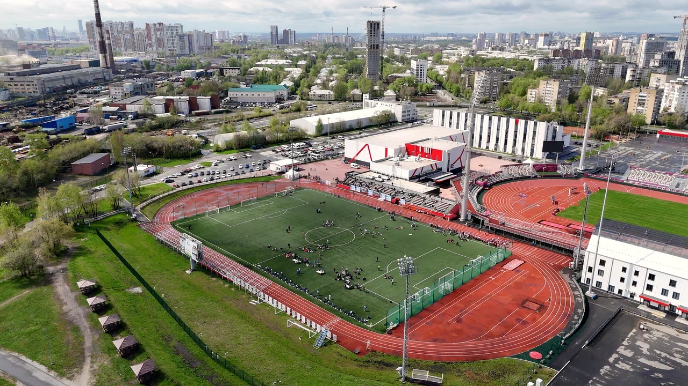

Дополнительная образовательная программа «Биатлон готов к труду и обороне» реализуется при поддержке Министерства просвещения Российской Федерации.
Семь лет в ряде территорий нашей страны развивается Проект «Биатлон в школу, Биатлон в ГТО, Биатлон в колледж, Аква Биатлон» Благотворительного фонда поддержки и развития физкультурно-спортивных многоборий «Биатлон Готов к Труду и Обороне».
В основе Проекта военно-прикладного значения лежит пятидесятилетний опыт авторов — Громыко Юрия Ивановича, Громыко Алёны Юрьевны, Громыко Лилии Ивановны — в спортивном зимнем и летнем многоборьях ГТО, летнем и зимнем биатлоне, плавании, лыжных гонках и стрельбе, адаптированных к материально-технической базе школы, колледжа, загородных лагерей.
За этот период на безвозмездной основе, за счёт внебюджетных и привлечённых средств, более 6000 комплектов мобильных биатлонных комплексов нашли свою прописку более чем в 1000 образовательных учреждений, организаций и отделениях ДЮСШ — не только в Свердловской области, но и ещё в 46 регионах нашей страны и стран содружества, включая Новые регионы.
Сегодня авторская программа «Биатлон Готов к Труду и Обороне» и авторский комплект мобильных биатлонных комплексов «Биатлон ГТО» (полное импортозамещение на базе модернизации МР-61) используются в уроке физкультуры школ и колледжей отдельным модулем «биатлон» (Приказ Министра просвещения РФ №171 от 19 марта 2024 года).
Герои проекта — это участники разных возрастов, для которых биатлон ГТО стал частью жизни. Они — воплощение энергии спорта, но при этом не профессиональные атлеты, а такие же ребята, как и все остальные. Ведь «Биатлон ГТО» рад каждому!
Первое знакомство со спортом через игру и пример родителей. Проект адаптирует элементы биатлона для самых маленьких.

Совершенствует навыки стрельбы на уроках физкультуры, выступает на соревнованиях и выполняет нормативы ГТО.
Представляет колледж на региональных стартах, помогает младшим товарищам и проходит судейскую практику.
Разнообразит учебный процесс спортивной подготовкой, защищает честь университета и изучает спортивно-методическое направление.
Внедряет модуль «биатлон» в уроки физкультуры, организует школьные спортивные клубы и повышает квалификацию.

Проводит лекции, мастер-классы и мотивационные встречи, делится опытом с подрастающим поколением.
Формирует рабочие команды для выступлений на стартах, проводит тренировки для укрепления здоровья сотрудников.
Стрельба с ходу, на пульсе, под нагрузкой — так проходят наши мероприятия по всей стране. Смотрите яркие кадры со стартов, мастер-классов и финалов «Биатлона ГТО».
Мастер-классы, встречи и мероприятия, которые мы проводим по всей стране

Стрельба из пневматической винтовки

И патриотических организациях
Сергей Чепиков при поддержке УрГПУ
Кадры со стартов, мастер-классов и финалов проекта







Да. В случае готовности их выполнения образовательная организация подаёт предварительную заявку в разделе сайта «Стать участником». Список участников проекта формируется ежегодно (февраль–апрель) совместно с региональным органом исполнительной власти в области образования.
Да, участие в проекте для школ бессрочное. Для исключения школы из списка участников проекта школе необходимо направить официальное письмо в адрес фонда и регионального органа исполнительной власти в области образования с обоснованием причины исключения.
Да, школа может самостоятельно реализовывать элементы проекта без официального включения в список, утверждённый фондом. Все материалы по реализации проекта находятся в общем доступе в разделе «Документы». При этом школа, официально не включённая в проект, не получает пакет спортивного инвентаря.
Школа, готовая выполнить критерии участия, подавшая заявку и официально включённая в реализацию в рамках договора пожертвования, заключённого между фондом и школой, получает пакет брендированного инвентаря для реализации проекта. Все расходы, связанные с закупкой и доставкой инвентаря, несёт фонд.
В период реализации проекта образовательной организации необходимо заполнить отчётную форму в личном кабинете школы на сайте Министерства просвещения РФ (еип-фкис.рф). Отчёт заполняется дважды в течение одного учебного года (январь, май).
Нет. Проект работает вне зависимости от наличия снежного покрова — в Ставропольском и Краснодарском крае, Южной и Северной Осетии, Чеченской республике, Кыргызстане и Республике Беларусь. Мобильные биатлонные комплексы «Биатлон ГТО» адаптированы под любую материально-техническую базу.
Подайте заявку — и получите комплект мобильного биатлонного оборудования для вашей организации
Перейти к форме заявки